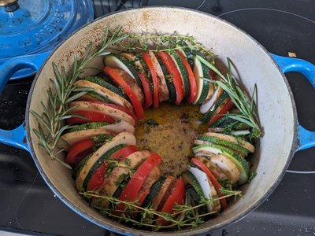

Remy's Ratatouille
<--Back to home page

Our Whole Garden In One Pot
I'm not sure where this recipe comes from. It's something we make all
the time in the summer when we have excess vegetables from our
garden.
There's a great Disney movie named after this dish. Here's my favorite
quote from the movie:
"If you are what you eat, then I only want to eat the good stuff."
- Remy, the rat
Tips & Tricks
- Don't overcook the vegetables - they should retain some texture
- Let the ratatouille rest for 30 minutes after cooking to allow flavors to meld
- Add a splash of balsamic vinegar at the end for extra depth of flavor
- This dish tastes even better the next day as leftovers
The Recipe
| Ingredient |
Quantity |
| Wild rice |
1 cup |
| Eggplant |
1 big one |
| Potatoes |
1 big one |
| Zucchini |
2 medium |
| Onion |
1 large |
| Garlic |
4 cloves |
| Tomatoes |
4 medium |
| Olive oil |
3 tablespoons |
| Fresh herbs |
As much as we have |
Instructions
- Cook the wild race
- Heat olive oil in a large pot or Dutch oven over medium heat
- Chop all the vegetables
- Cook the onions for a while until they are very soft
- Add garlic and cook for 1 more minute
- Add eggplant, zucchini, potatoes in a ring aroudn the outside
of the dutch oven.
- Cover and bake for 20-25 minutes at 350 degrees
- Stir in remaining fresh herbs just before serving
- Serve ratatouille over cooked wild rice
Preparation time: 1 hour 15 minutes
Servings: 4-6 people